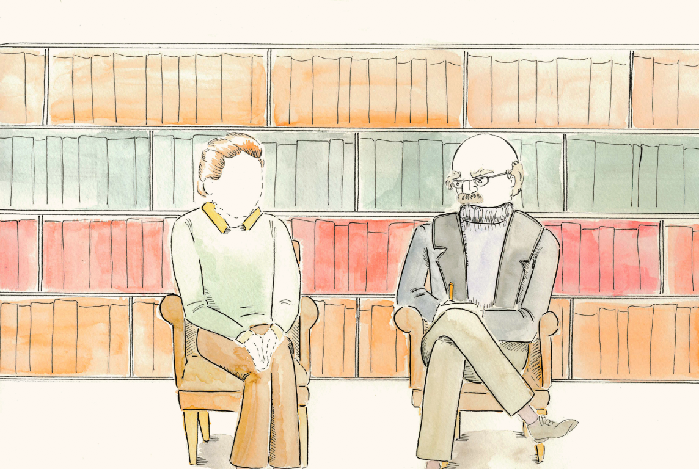
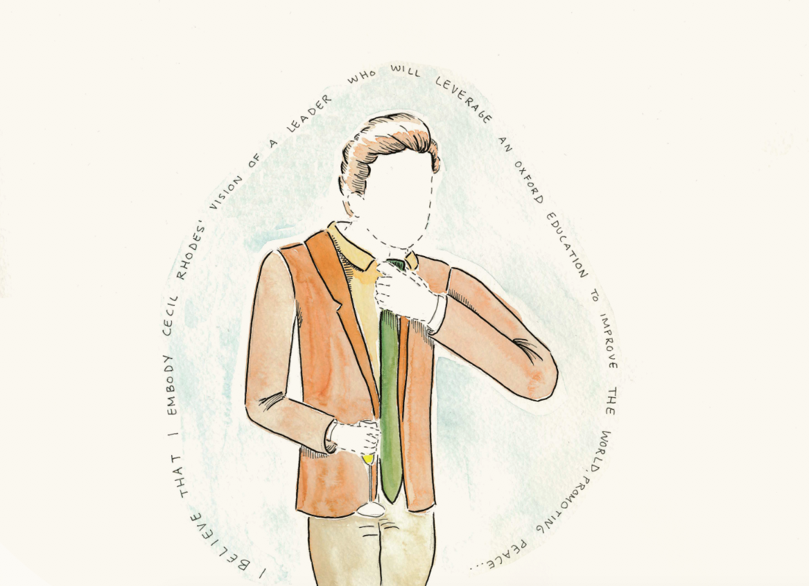
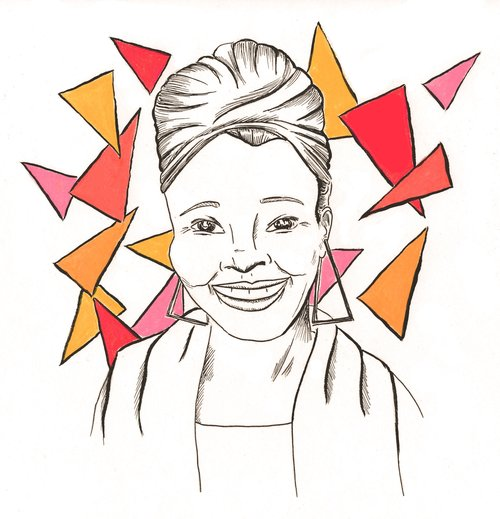
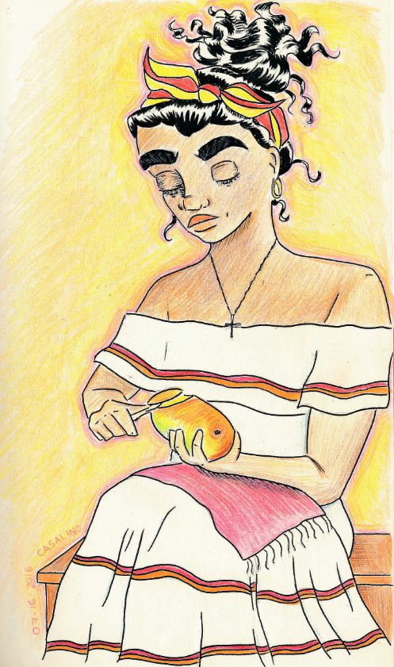
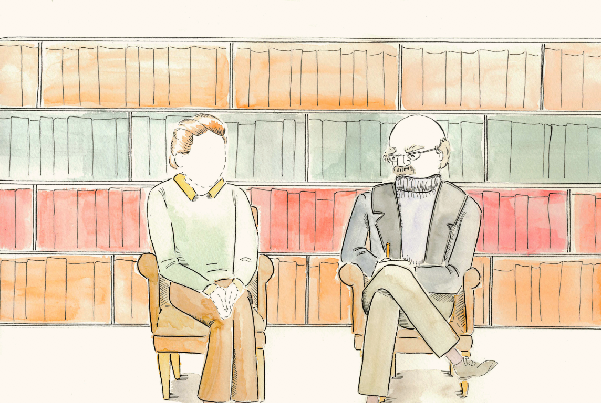
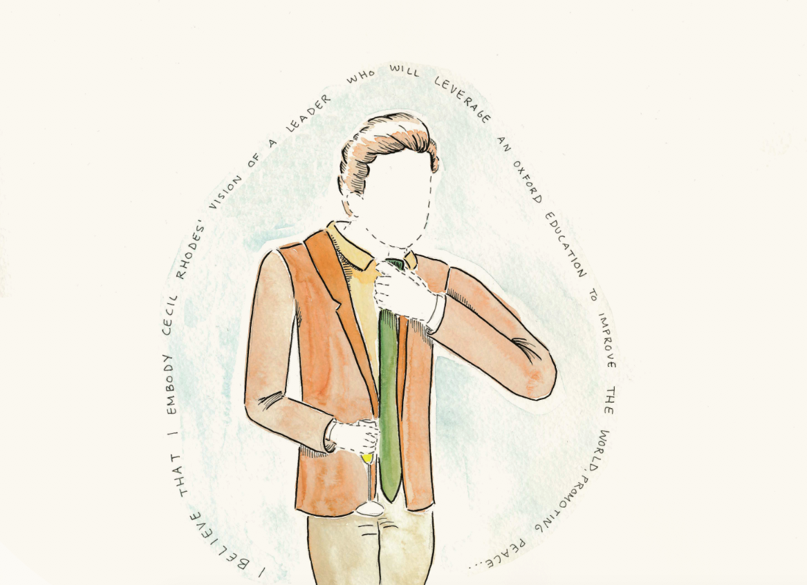
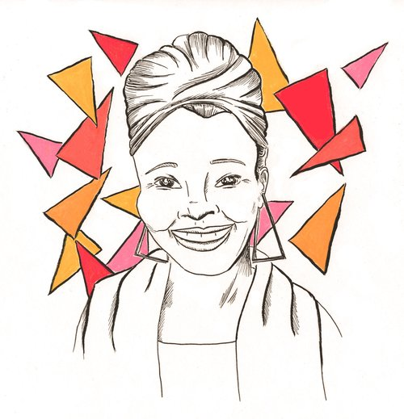
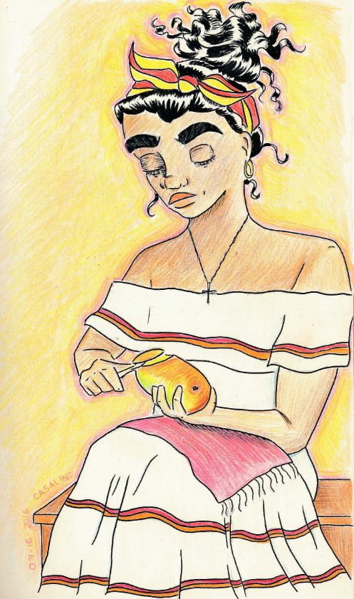

DANIELA CASALINO
MY WORK
Here are some things that I've made! I'm pursuing my BA in Architecture at Barnard College and I'm staff illustrator at the Columbia Daily Spectator.

 







BIO
Born in Lima but raised globally, Daniela Casalino is a student at Barnard College of Columbia University in New York City.
She is studying architecture and English and is passionate about urban development, animation, Latin American cultures, and illustration.
Currently Daniela is currently a staff illustrator for the Columbia Daily Spectator, studio member at Design for America, and an HTML/CSS student at the Athena Digital Design Agency.
In her free time, Daniela enjoys reading and creating graphic novels, researching skincare, and watching animated movies.
Resume
University: Barnard College, Columbia University
BA in Arcitecture
GPA: 3.84
Here are all the jobs I've worked and organizations that i'm a part of:
Venture for America (September 2016 - present)
Columbia Daily Spectator (February 2016 - present)
Design for America (September 2015 - present)
Barnard Babysitting Agency (September 2015 - present)
Microsoft (July 2016 - August 2016)
IMB (May 2016 - June 2016)
Pixelle.co (March 2016 - July 2016)
For a more detailed breakdown of my resume, feel free to check out my full resume
Languages: Fluent in Spanish and English (native in both)
Computer: HTML/CSS, 76 WPM, Proficient in Excel, Microsoft Office Suite, Photoshop, Illustrator, InDesign, iMovie, Adobe Creative Cloud
Interests: Sustainable architecture, industrial design, computer animation, entrepreneurship, illustration, Latin American culture and history